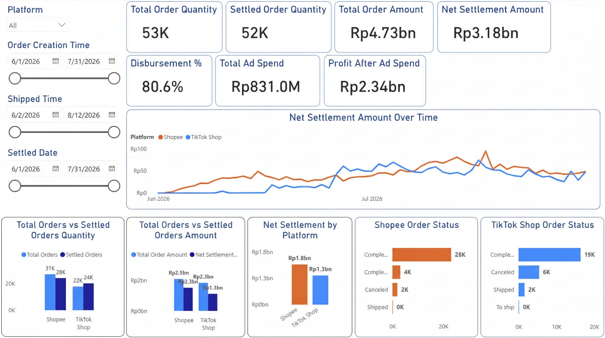

ARE MANUAL SPREADSHEETS KEEPING YOU FROM SCALING YOUR BUSINESS?
I automate your data pipeline into a simple dashboard so you can focus on the metrics that grow your business.

What people are saying:
```


 ```
```
Confidentiality Note:
To comply with Non-Disclosure Agreements (NDAs), all sensitive metrics, proprietary business logic, and identifying customer details have been anonymized or modified. The data structures and engineering architecture remain identical to the production environment.
Client Profile:
High-Volume E-Commerce Retailer (TikTok Shop & Shopee)
Core Impact: Engineered a unified data ingestion pipeline that aggregates fragmented multi-platform order and income streams, eliminating manual reporting overhead.

Business Value & Outcomes (Click to expand)
- Decoupled File Ingestion: Designed a seamless architecture allowing non-technical operators to feed raw platform export of orders and income reports into a centralized system without breaking schema integrity
- Unified Financial Modeling: Automated the structural transformation of conflicting data schemas (TikTok vs. Shopee) into a standardized star-schema database model
- Operational Velocity: Replaced a 6-hour weekly manual consolidation process with an automated view of net margins, settled order volumes, and disbursement %
Technical Stack & Competencies (Click to expand)
- Data Engineering: ETL Pipeline Design, Cross-Platform Schema Standardization, Star-Schema Data Modeling
- Business Intelligence: Advanced DAX, Power Query M-Engine, Operational KPI Dashboards
Client Profile:
B2B Marketing Firm
Core Impact: Structured a marketing dataset into a clean performance engine, decreasing executive reporting latency by 50%.


Business Value & Outcomes (Click to expand)
- Process Optimization: Eliminated weekly manual reporting cycles by engineering an automated KPI calculation framework
- Revenue Leakage Isolation: Identified a critical 28.65% campaign delivery failure rate, instantly surfacing optimization targets to maximize client acquisition ROI
Technical Stack & Competencies (Click to expand)
- Analytics & Visualization: High-Density Executive Dashboards, Cohort Analysis, Performance Bottleneck Identification
Client Profile:
Energy Industry Training Consultant
Core Impact: Built an automated cloud-linked operational tracker connected to enterprise storage, reducing data latency to zero manual intervention.

🔒 Dashboard Highly Confidential — Not Available for External Viewing
Business Value & Outcomes (Click to expand)
- Cloud Infrastructure Sync: Architected a live data pipeline tethered directly to the client's cloud repository (SharePoint Document Library) to capture multi-department updates
- Automated Refresh Architecture: Implemented automated data orchestration via scheduled daily gateway refreshes on cloud services, ensuring leadership always accesses real-time operational metrics
- Data Integrity: Engineered robust transformation logic to automatically clean, deduplicate, and validate incoming regional training logs before visual rendering
Technical Stack & Competencies (Click to expand)
- Data Architecture: Cloud Integration, Scheduled Gateway Orchestration, Automated Data Cleansing
- Business Intelligence: Enterprise Asset Tracking, Role-Based Operational Metrics